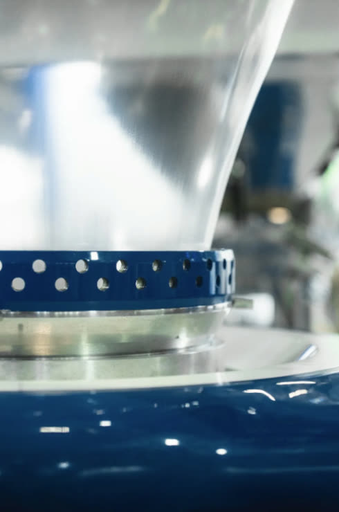
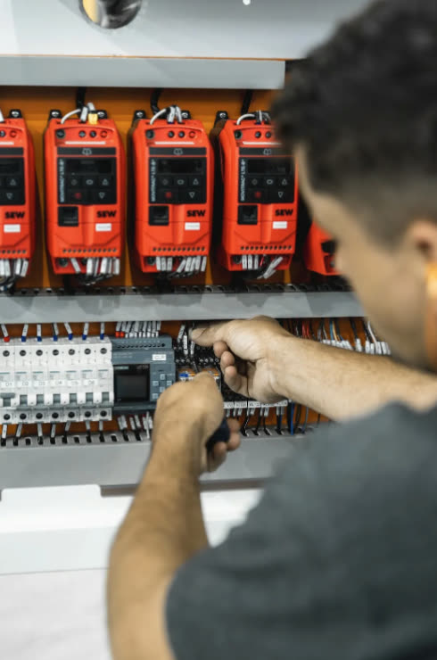
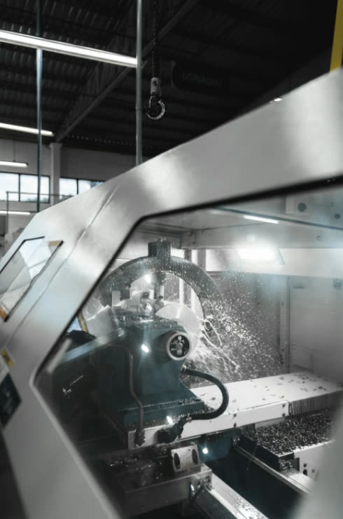
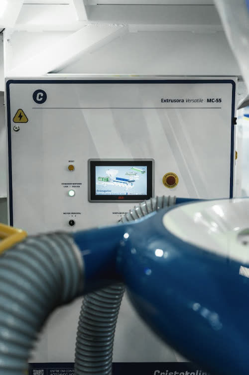
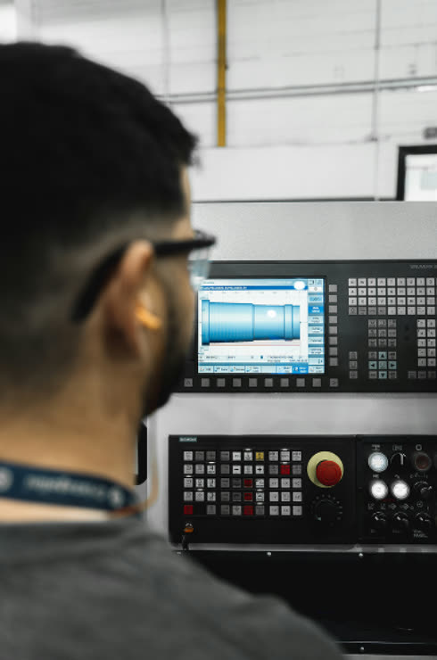
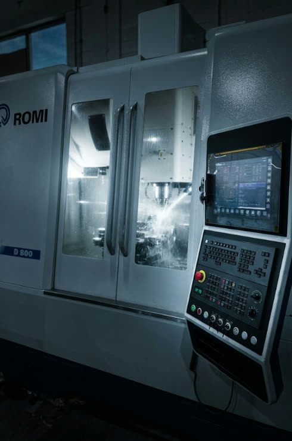

01
Produzindo em até 3 dias.
Lógica modular de projeto e técnicos experientes: a montagem mais rápida do Brasil.
Cristofolini Máquinas · desde 1997 · Grande Florianópolis
Extrusoras, picotadeiras e impressoras para a indústria de embalagens plásticas flexíveis. Role a página: do grão de resina ao produto pronto, e depois para dentro da fábrica.
01 · O que sai daqui
PEAD ou PEBD entrando no funil da extrusora. Daqui até o produto pronto, tudo passa por máquina Cristofolini.
O balão sobe da extrusora com anel de ar, torre giratória e alinhador eletrônico. Planicidade de filme desde o primeiro metro.
Largura útil do bobinador nas extrusoras MC-50 e MC-55. Até três bobinas de 400 mm ao mesmo tempo.
Nas picotadeiras MC-02 e MC-32 a troca é totalmente automática: o operador só retira as bobinas.
O rolo de sacos picotados sai da máquina do jeito que vai para a gôndola. É isso que a sua fábrica entrega.
02 · Quem somos
Trabalhamos também para entregar serviços que garantam desempenho, confiança e resultados ao longo do tempo.
03 · No chão de fábrica
Centros de usinagem e tornos CNC de última geração, equipe treinada e fornecedores de referência mundial.
Desde 1997 desenvolvemos as nossas próprias máquinas, pensadas para a eficiência de quem produz.
Lógica modular de projeto e técnicos experientes: a montagem mais rápida do Brasil.
O máximo de produtividade com o mínimo de manutenção. O que muitos chamam de qualidade, nós chamamos de eficiência.
04 · Em destaque
Capacidade de produção com rosca de L/D 1:32, comprimento acima do convencional.
Largura útil do bobinador. Até três bobinas de 400 mm ao mesmo tempo.
Conjunto de extrusão desenhado para otimizar a plastificação da resina.
CLP com tela touchscreen colorida. Operação simples e indicadores acompanhados à distância.
Cabeçote fixo, torre giratória e alinhador eletrônico para a melhor planicidade de filme.
05 · Diferenciais
A máquina é o ponto de partida. O que faz a diferença é o que vem junto: montagem, suporte, peças e engenharia de quem fabrica.

Lógica modular de projeto e técnicos experientes: a montagem mais rápida do Brasil.

Engenharia e suporte em canal remoto dedicado e gratuito, com visita presencial quando precisa.

Estoque dos itens de maior giro e prioridade na fabricação dos demais. Sua produção não fica esperando.

Projetos originais, componentes de alta qualidade e só a tecnologia que faz diferença na operação.

Centros de usinagem e tornos CNC de última geração, equipe treinada e fornecedores de referência mundial.

Da usinagem à montagem, tudo dentro da nossa sede em Santa Catarina.
anos de história, desde o primeiro torno em 1997
profissionais entre engenharia, usinagem e montagem
países atendidos na América do Sul
dias da chegada da máquina até a primeira bobina
06 · Linha completa
07 · Nossa história
1983
Começamos dentro de uma grande indústria do setor de plásticos flexíveis, na mecânica, usinagem, elétrica e metrologia. Anos acompanhando de perto a produção e resolvendo problema real.
Depois de mais de uma década, passamos a prestar serviços especializados para outras indústrias do segmento.
1997
Com a compra do primeiro torno nasce oficialmente a Cristofolini. Os primeiros anos foram de manutenção de extrusoras de balão e demais equipamentos do setor.
Crescimento
O passo que mudou o futuro: desenvolver e fabricar nossos próprios equipamentos. Sem cópias. Sem atalhos. Soluções que mexem direto na eficiência e no resultado de quem produz.
Hoje
Sede na Grande Florianópolis e clientes em todas as regiões do Brasil e da América do Sul. Crescimento feito de experiência prática, engenharia, equipe qualificada e estrutura moderna.
Se for para fazer mais do mesmo, preferimos não fazer.
Se um projeto não atinge o nível de produtividade, robustez ou desempenho em que acreditamos, ele não é lançado. Simples assim. Para nós, eficiência não é promessa. É resultado.
08 · Contato
Fale direto com a área certa pelo WhatsApp. Quem responde é quem conhece a máquina.